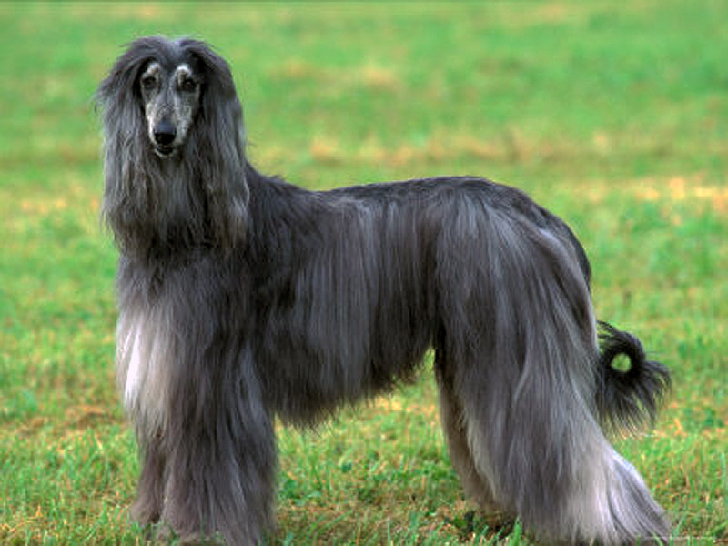

A Blue Look-a-like This is NOT our Blue. It's a look-a-like I got off the Internet just to convey the idea of how he looked as a grown Afghan. It's not an exact look-a-like - our Blue's face and body didn't have this much white on it - but basically, it generally conveys the idea. It's sad I don't actually have any pictures of him as an adult. |